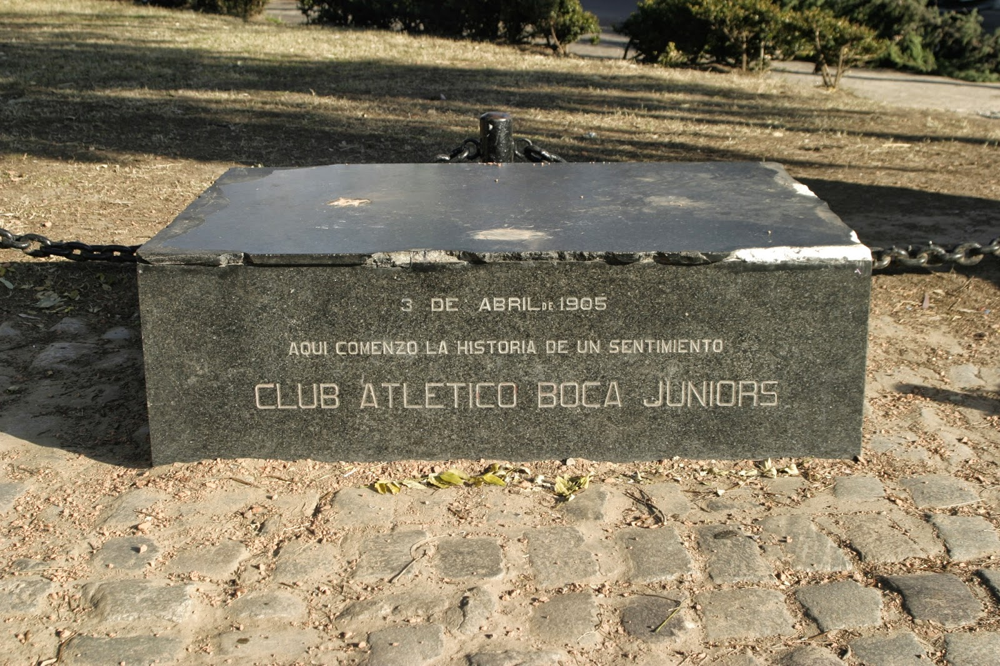

Historia
El Club Atlético Boca Juniors es una entidad deportiva argentina, con sede en el barrio de La Boca, Buenos Aires. Fue fundado el 3 de abril de 1905 por seis vecinos adolescentes hijos de italianos.